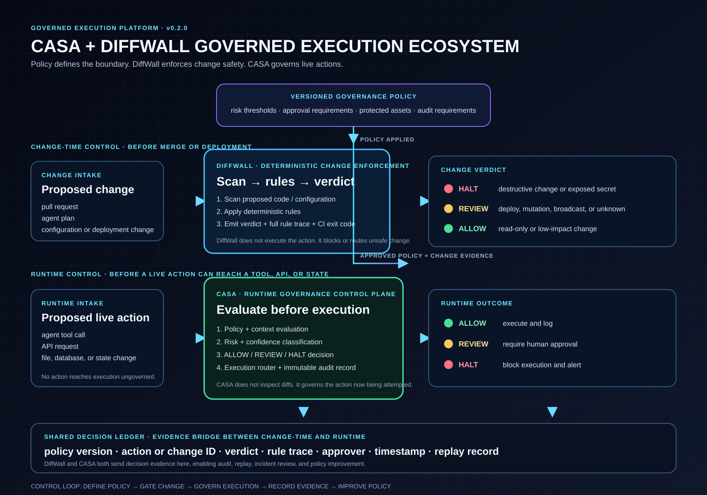

Operator Intelligence / Governance Platform
Unified Governance Platform Architecture
Operator Intelligence is the commercial entry point: diagnose the gap, prioritize the control, enforce change with DiffWall, govern live execution with CASA, and preserve proof in the shared ledger.
Operator IntelligenceAssess and prioritize
DiffWallEnforce change safety
CASAGovern runtime execution
Shared Decision LedgerEvidence and replay
